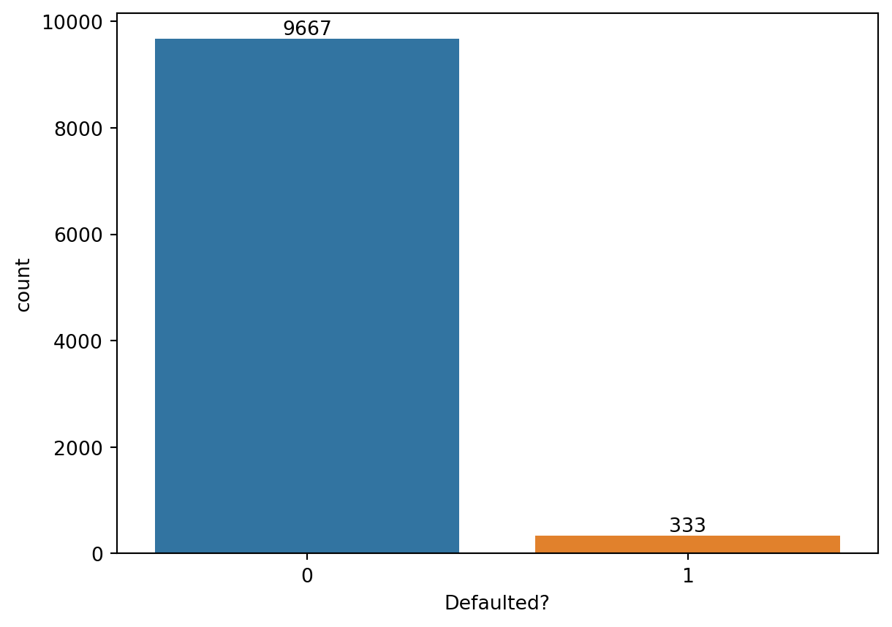
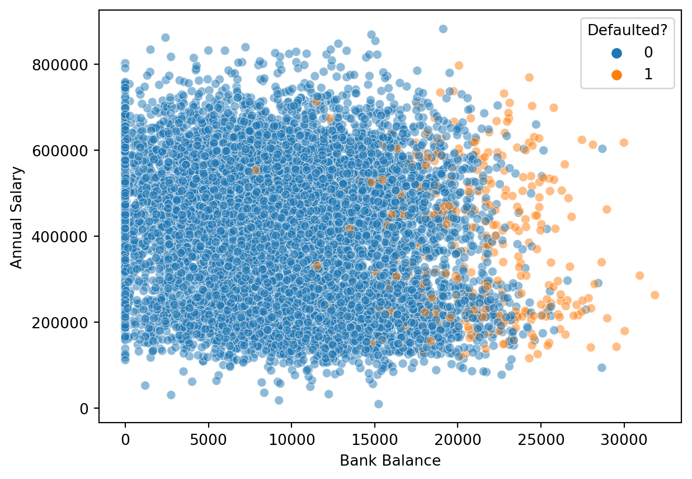
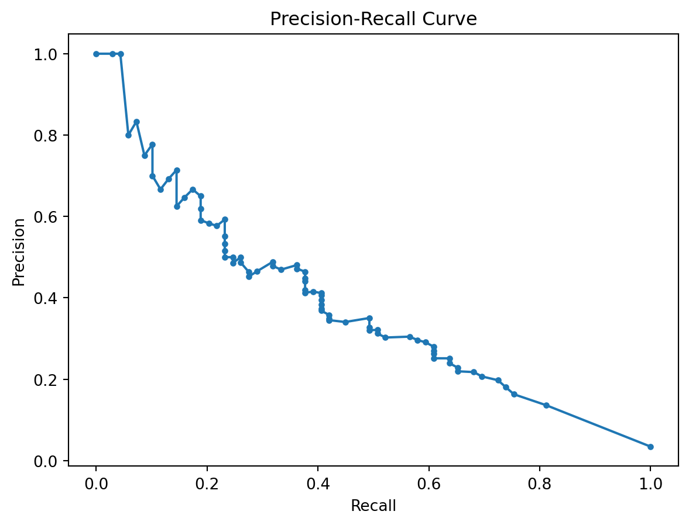

import pandas as pd
from sklearn.model_selection import train_test_split
from sklearn.ensemble import RandomForestClassifier
from sklearn.metrics import classification_report
import seaborn as sns
import matplotlib.pyplot as plt
from sklearn.metrics import precision_recall_curve
from sklearn.model_selection import train_test_split
from sklearn.linear_model import LogisticRegression
%matplotlib inlineIn this blog post, I’ll be discussing classification. Essentially, classification is a technique used in supervised machine learning, where the model is trained to accurately identify the label of any input data it receives. However, this concept is quite straightforward in practice.
Classification is like sorting things into groups based on what they have in common. Imagine we have a box of toys, and we want to organize them. We might put all the cars in one group, all the dolls in another, and all the blocks in a third group. Each of these groups is like a category.
In the same way, in science and in everyday life, we classify things to understand and organize them better. For example, in a library, books are classified or sorted into groups like fiction, non-fiction, science, history, and so on. This helps us find what we’re looking for more easily.
In the world of computers and technology, classification is used to teach computers how to recognize different types of things, like pictures of cats and dogs, or emails that are spam or not spam. The computer looks at the features (like shapes, colors, words) of each thing and learns to sort them into the right group.
However, the advanced uses of classification go beyond basic tasks, significantly aiding in complex and vital areas. It’s instrumental in environmental monitoring, where it analyzes satellite and sensor data for tracking changes like deforestation or urban development. In the banking and insurance sectors, it’s crucial for fraud detection, identifying potential fraud to protect financial assets and privacy. Additionally, facial recognition technology, familiar in security and personal devices, relies on classification for identifying individuals.
But anyway, classification is just a fancy word for sorting or grouping things based on their features or characteristics.
Task Demo
For this blog, I would utilize the classification technology to predict a task related to finance as well, which is whether the loan of a person will be defaulted.
I adopted a dataset called Loan Default Prediction from Kaggle.
Let me import libaraies and load the dataset.
df = pd.read_csv('datasets/Default_Fin.csv')df.info()<class 'pandas.core.frame.DataFrame'>
RangeIndex: 10000 entries, 0 to 9999
Data columns (total 5 columns):
# Column Non-Null Count Dtype
--- ------ -------------- -----
0 Index 10000 non-null int64
1 Employed 10000 non-null int64
2 Bank Balance 10000 non-null float64
3 Annual Salary 10000 non-null float64
4 Defaulted? 10000 non-null int64
dtypes: float64(2), int64(3)
memory usage: 390.8 KBax = sns.countplot(data=df,x='Defaulted?')
ax.bar_label(ax.containers[0])[Text(0, 0, '9667'), Text(0, 0, '333')]
In this plot, ‘0’ represents loans are not defaulted and ‘1’ represents defaulted. We can see that most people’s loan is not defaulted, but there are still people’s loan get defaulted.
sns.scatterplot(data=df,y='Annual Salary',x='Bank Balance',hue='Defaulted?',alpha=0.5);
This plot shows that annual salary doesn’t really affect loan defaults, as we can see that the orange spots, representing defaults, are spread out evenly up and down. On the other hand, the amount of money people have in their bank accounts does seem to matter. This is because all the orange spots are mostly on the right side. So, it suggests that loans with larger amounts are more likely to be defaulted on.
Let’s train our prediction model.
df = df.drop('Index',axis=1).copy()X = df.drop('Defaulted?', axis=1)
y = df['Defaulted?']
X_train, X_test, y_train, y_test = train_test_split(X, y, test_size=0.2, random_state=42)
# Model training
model = RandomForestClassifier()
model.fit(X_train, y_train)RandomForestClassifier()In a Jupyter environment, please rerun this cell to show the HTML representation or trust the notebook.
On GitHub, the HTML representation is unable to render, please try loading this page with nbviewer.org.
RandomForestClassifier()
# Model evaluation
predictions = model.predict(X_test)
print(classification_report(y_test, predictions)) precision recall f1-score support
0 0.97 0.99 0.98 1931
1 0.49 0.26 0.34 69
accuracy 0.96 2000
macro avg 0.73 0.63 0.66 2000
weighted avg 0.96 0.96 0.96 2000
Through this result, we can tell that the model is very effective in identifying class 0 instances but struggles with class 1 (low recall and precision for class 1). Besides, the high overall accuracy might be misleading due to the imbalance in the dataset. The performance on the minority class (class 1) is a concern.
# Predict probabilities
y_scores = model.predict_proba(X_test)[:, 1]
# Compute Precision-Recall values
precision, recall, thresholds = precision_recall_curve(y_test, y_scores)
# Plot the Precision-Recall curve
plt.figure()
plt.plot(recall, precision, marker='.')
plt.title('Precision-Recall Curve')
plt.xlabel('Recall')
plt.ylabel('Precision')
plt.show()
The PR (Precision-Recall) curve suggests that the model’s performance is suboptimal. For PR curve: - The closer the curve is to the top-right corner of the plot, the better. - A good PR curve will show a gradual decline in precision as recall increases. A steep drop in precision would indicate that the classifier begins to make a lot of false positive errors as it tries to increase its recall. - The area under the PR curve is a useful metric. A larger area under the curve (closer to 1) indicates a better overall performance of the classifier.
The poor performance in this task may be due to an imbalance in the dataset between the number of defaulted and non-defaulted loans, combined with a limited range of features used.